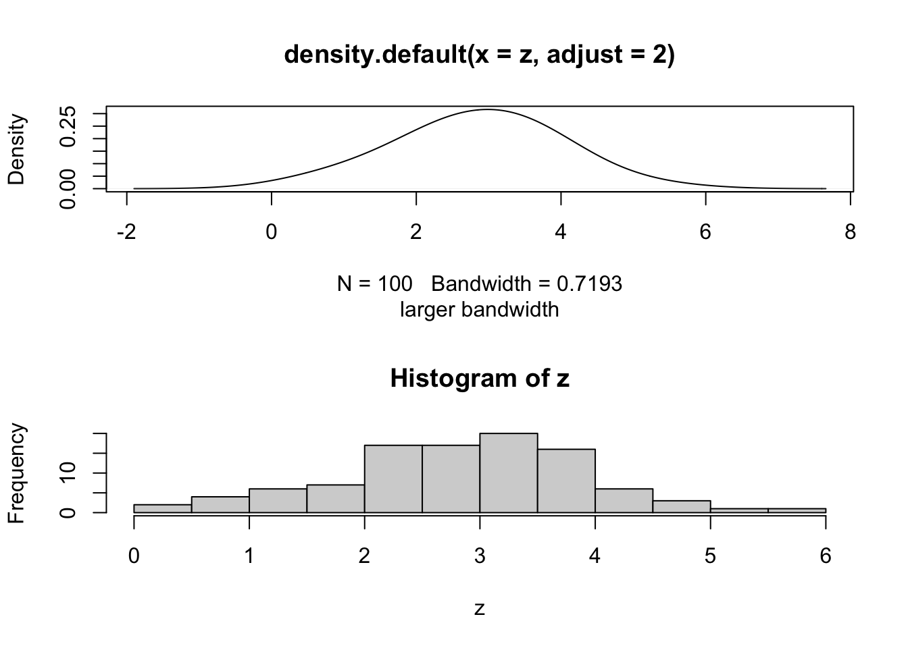

5 Plotting and Graphics
Visit these sites for some ideas.
- http://www.sr.bham.ac.uk/~ajrs/R/r-gallery.html
- http://gallery.r-enthusiasts.com/
- http://cran.r-project.org/web/views/Graphics.html
5.1 Basic Plot Functions
The command plot(x,y) will plot vector x as the independent variable and vector y as the dependent variable. Within the command line, you can specify the title of the graph, the name of the x-axis, and the name of the y-axis. - main=’title’ - xlab=’name of x axis’ - ylab=’name of y axis’
The command lines(x,y) adds a line segment to an existing plot. The command points(x,y) adds points to the plot. A legend can be created using legend, though getting the legend right for base graphics can be a bit challenging. To get a basic idea of what R offers, it has a build-in demo that can be run with demo(graphics).
5.1.1 Simple Plotting Example
Try this yourself:
x = 1:100
y = rnorm(100,3,1) # 100 random normal deviates with mean=3, sd=1
plot(x,y)plot(x,y,main='My First Plot')
# change point type
plot(x,y,pch=3)
# change color
plot(x,y,pch=4,col=2)
# draw lines between points
lines(x,y,col=3)
z=sort(y)
# plot a sorted variable vs x
plot(x,z,main='Random Normal Numbers',
xlab='Index',ylab='Random Number')
# A basic histogram
hist(z, main="Histogram",
sub="Random normal")
# A "density" plot
plot(density(z), main="Density plot",
sub="Random normal")
# A smaller "bandwidth" to capture more detail
plot(density(z, adjust=0.5),
sub="smaller bandwidth")
5.1.2 Graphics Devices and Saving Plots
To make a plot directly to a file use: png(), postscript(), etc.
png(file="myplot.png",width=480,height=480)
plot(density(z,adjust=2.0),sub="larger bandwidth")
dev.off()## quartz_off_screen
## 2On your own, save a pdf to a file. NOTE: The dimensions in pdf() are in inches.
To put multiple plots on a page, we can set the mfrow graphics parameter.
par(mfrow=c(2,1))
plot(density(z,adjust=2.0),sub="larger bandwidth")
hist(z)
# use dev.off() to turn off the two-row plottingR can have multiple graphics “devices” open.
- To see a list of active devices:
dev.list() - To close the most recent device:
dev.off() - To close device 5:
dev.off(5) - To use device 5:
dev.set(5)